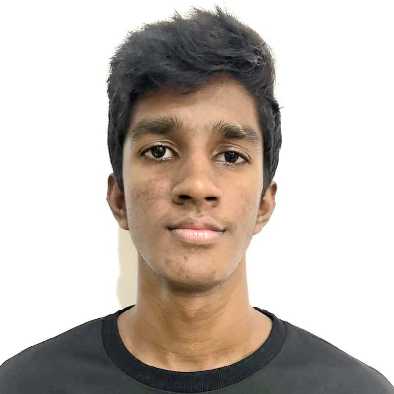

Senuk Ranathunga
Prefect
Grade 11 A
About Me
Hey everyone, I'm Senuk Ranathunga, and there are a few passions that define who I am and what I aspire to achieve in life. Firstly, athletics has always been a major part of my life; the rush of adrenaline, the thrill of competition, and the satisfaction of pushing my limits keep me motivated and focused. Beyond sports, I have a deep appreciation for the world of anime—its rich storytelling, complex characters, and imaginative worlds never fail to captivate my imagination. Alongside anime, I find solace and joy in playing badminton, where the swift movements and strategic gameplay provide a perfect balance of fun and challenge.
Despite my active pursuits, academics hold a special place in my heart. I genuinely enjoy learning and exploring new subjects, particularly in the sciences, which has fueled my ambition to pursue a career in medicine. My dream is to become a doctor, driven by a passion for helping others and making a meaningful difference in people's lives through healthcare. The prospect of combining my love for science with the opportunity to positively impact patients' lives inspires me every day.
In addition to my personal interests, I draw inspiration from mentors like Miss Heshani, our class teacher, whose dedication and guidance have shaped my values of perseverance, compassion, and continuous learning. As I continue on my journey towards becoming a doctor, I am eager to embrace challenges, expand my knowledge, and contribute meaningfully to society. With athletics keeping me disciplined, anime sparking my creativity, badminton offering moments of joy, and a relentless drive to excel academically, I am excited about the future and the possibilities it holds for me to achieve my goals and make a difference in the world